Differential Expression and Pathway Enrichment
Chomchon Uansiri
2026-11-14
Source:vignettes/OHMmy-differential-expression.Rmd
OHMmy-differential-expression.RmdOverview
This article goes from cluster markers to pathways and pseudo-bulk differential expression.
| Step | Functions |
|---|---|
| Cluster markers | FindTopMarkersAndHeatmap() |
| Markers across resolutions, dichotomous key | find_hierarchical_markers() |
| Track markers down the tree, suggest cluster labels | track_cluster_markers() |
| Marker tables across conditions |
plot_gene_markers_with_dendro(),
plot_split_dotplots_by_gene_cluster()
|
| Pathway enrichment |
run_global_gsea(), run_global_ora()
|
| Pseudo-bulk DESeq2 visualisation |
generate_volcano_trio(),
get_top_mixed_genes(),
generate_and_save_heatmap()
|
library(Seurat)
library(OHMmy)
library(dplyr)
library(ggplot2)
source("ohmmy-vignette-helpers.R")
library(msigdbr) # MSigDB gene sets
library(DESeq2) # pseudo-bulk differential expression
pbmc <- load_pbmc3k_ohmmy() # built in "Data Processing, Integration, and Clustering"
out_dir <- file.path(tempdir(), "OHMmy-differential-expression")
dir.create(out_dir, recursive = TRUE, showWarnings = FALSE)The classic GSEA enrichment plots and the volcano plots additionally use the suggested packages enrichplot and EnhancedVolcano. OHMmy calls them internally, so they only need to be installed.
1. Cluster markers with FindTopMarkersAndHeatmap()
FindTopMarkersAndHeatmap() runs
FindAllMarkers() on the active identities, or
FindMarkers() for a single pairwise comparison when
compare is given. It uses logfc.threshold = 0
and min.pct = 0, so the complete ranked table needed for
GSEA is kept. Markers are then ranked by a combined relevance score,
|log2FC| x |pct.1 - pct.2| / p_adj, filtered by the three
marker_* thresholds, and the top top_n per
cluster are drawn in a DoHeatmap. Three CSV files are
written: all markers, a GSEA/ORA-ready copy, and the filtered top
markers.
Idents(pbmc) <- "cell_type"
mk <- FindTopMarkersAndHeatmap(
seurat_obj = pbmc,
sample_name = "pbmc3k_celltype",
top_n = 6,
onlyPos = TRUE,
output_dir_base = file.path(out_dir, "markers"),
height = 11,
dpi = 100
)
names(mk)
#> [1] "top_markers" "heatmap" "markers" "output_dir"
mk$top_markers %>%
group_by(cluster) %>%
slice_head(n = 3) %>%
dplyr::select(cluster, gene, avg_log2FC, pct.1, pct.2, p_val_adj, score)
#> # A tibble: 24 × 7
#> # Groups: cluster [8]
#> cluster gene avg_log2FC pct.1 pct.2 p_val_adj score
#> <fct> <chr> <dbl> <dbl> <dbl> <dbl> <dbl>
#> 1 CD4 T CD3D 1.86 0.876 0.239 0 11832733243.
#> 2 CD4 T MAL 4.18 0.273 0.024 0 10408717439.
#> 3 CD4 T IL7R 2.07 0.662 0.198 0 9627326382.
#> 4 CD8 T CCL5 3.31 0.986 0.235 0 24860743868.
#> 5 CD8 T GZMK 4.28 0.568 0.058 0 21819033699.
#> 6 CD8 T NKG7 2.47 0.968 0.218 0 18515415364.
#> 7 NK GZMB 5.93 0.943 0.069 0 51839175856.
#> 8 NK GNLY 6.10 0.949 0.131 0 49870973178.
#> 9 NK FGFBP2 5.31 0.866 0.062 0 42699888960.
#> 10 B CD79A 6.85 0.938 0.042 0 61335103114.
#> # ℹ 14 more rows
mk$heatmap
Pairwise comparison
With compare = c(ident.1, ident.2), the function runs a
single FindMarkers() test. It adds the gene
and cluster columns (each gene is assigned to the identity
in which it is higher), so the output has the same format as the
all-cluster version. With onlyPos = FALSE, genes enriched
on both sides are kept.
mk_mono <- FindTopMarkersAndHeatmap(
seurat_obj = subset(pbmc, subset = cell_type %in% c("CD14 Mono", "FCGR3A Mono")),
sample_name = "pbmc3k_monocytes",
compare = c("FCGR3A Mono", "CD14 Mono"),
onlyPos = FALSE,
top_n = 10,
output_dir_base = file.path(out_dir, "markers"),
height = 7,
dpi = 100
)
table(mk_mono$top_markers$cluster)
#>
#> CD14 Mono FCGR3A Mono
#> 10 10
mk_mono$heatmap
Markers across resolutions: a dichotomous key
Low resolutions separate the major populations and higher resolutions
split them into sub-populations.
find_hierarchical_markers() follows the clusters from low
to high resolution. It links each cluster to the lower-resolution
cluster that holds most of its cells, and that share is reported as
purity. At every split it compares each child with
its siblings only, so broad markers shared by all children (for
example CD3E within T cells) do not reappear at the finer
levels.
Markers must pass four filters: adjusted p-value, log2FC,
pct.1 and pct.1 - pct.2. They are then ranked
by AUC, the probability that a random child cell
expresses the gene more highly than a random sibling cell (0.5 = no
separation, 1 = perfect). The clusters were defined on the same data, so
the p-values are optimistic. They work as a filter, not as evidence on
their own.
hm <- find_hierarchical_markers(
seurat_obj = pbmc,
res_cols = c("har_snn_res.0.2", "har_snn_res.0.6", "har_snn_res.1.2"),
sample_name = "pbmc3k",
output_dir = file.path(out_dir, "hierarchical_markers")
)hm$splits summarises each split. hm$markers
holds every gene that passed the filters, with its rank, AUC, the usual
DE statistics and a pattern:
| Pattern | Meaning |
|---|---|
lineage |
Marks this child, but does not separate its own sub-clusters (shared by all of them) |
split |
Separates this child from its siblings |
specific |
The child does not split further, and the gene also separates it
from all other cells (auc_vs_all >= 0.8) |
unstable |
The child has purity below min_purity: its cells came
from more than one parent, so the split is not clean across
resolutions |
hm$splits[, c("split", "children", "n_markers", "n_key_genes", "cv_accuracy")]
#> split children n_markers n_key_genes
#> 1 root res0.2_0, res0.2_1, res0.2_2, res0.2_3 148 4
#> 2 res0.2_0 res0.6_0, res0.6_1, res0.6_8 5 1
#> 3 res0.2_1 res0.6_2, res0.6_5, res0.6_7 95 2
#> 4 res0.2_2 res0.6_4, res0.6_6 31 2
#> 5 res0.6_0 res1.2_0, res1.2_10 17 0
#> 6 res0.6_1 res1.2_1, res1.2_7 1 0
#> 7 res0.6_2 res1.2_4, res1.2_5 32 2
#> cv_accuracy
#> 1 0.9632297
#> 2 0.6816221
#> 3 0.9329359
#> 4 0.8960739
#> 5 0.9603960
#> 6 1.0000000
#> 7 0.7112527
hm$markers %>%
group_by(split, child) %>%
slice_head(n = 2) %>%
dplyr::select(split, child, gene, rank, auc, p_val_adj, pct.1, pct.2, pattern)
#> # A tibble: 25 × 9
#> # Groups: split, child [13]
#> split child gene rank auc p_val_adj pct.1 pct.2 pattern
#> <chr> <chr> <chr> <int> <dbl> <dbl> <dbl> <dbl> <chr>
#> 1 res0.2_0 res0.6_0 ANXA1 1 0.722 0 0.786 0.415 lineage
#> 2 res0.2_0 res0.6_0 S100A11 2 0.705 0 0.607 0.214 lineage
#> 3 res0.2_1 res0.6_2 S100A8 1 0.947 0 0.973 0.495 lineage
#> 4 res0.2_1 res0.6_2 LGALS2 2 0.870 0 0.904 0.381 lineage
#> 5 res0.2_1 res0.6_5 FCGR3A 1 0.979 0 0.982 0.128 specific
#> 6 res0.2_1 res0.6_5 IFITM2 2 0.937 0 1 0.693 specific
#> 7 res0.2_1 res0.6_7 HLA-DQB1 1 0.969 0 1 0.308 specific
#> 8 res0.2_1 res0.6_7 HLA-DQA1 2 0.959 0 0.968 0.273 specific
#> 9 res0.2_2 res0.6_4 CD3D 1 0.901 0 0.88 0.108 split
#> 10 res0.2_2 res0.6_4 GZMK 2 0.734 0 0.572 0.127 split
#> # ℹ 15 more rowsFor each split, a decision tree (rpart) is grown on
the top-ranked markers and pruned by cross-validation, so each split
gets as many genes as it needs. hm$key lists every question
of the key. The chosen gene has role = "key". The
role = "backup" rows are genes that sort the cells almost
the same way, with their agreement. Every row carries the
same ranking columns as hm$markers.
hm$key %>%
dplyr::select(split, role, gene, rule, agreement, rank, auc, pct.1, pct.2, pattern)
#> split role gene rule agreement
#> 1 root key CST3 CST3 >= 2.71 -> res0.2_1 NA
#> 2 root backup LYZ LYZ >= 2.91 -> res0.2_1 0.86458333
#> 3 root backup AIF1 AIF1 >= 2.33 -> res0.2_1 0.83184524
#> 4 root backup LST1 LST1 >= 2.2 -> res0.2_1 0.82440476
#> 5 root backup TYROBP TYROBP >= 2.87 -> res0.2_1 0.81398810
#> 6 root backup S100A9 S100A9 >= 2.29 -> res0.2_1 0.79761905
#> 7 root backup FCN1 FCN1 >= 2.07 -> res0.2_1 0.74404762
#> 8 root backup LGALS1 LGALS1 >= 2.88 -> res0.2_1 0.72470238
#> 9 root backup TYMP TYMP >= 1.92 -> res0.2_1 0.70982143
#> 10 root backup CTSS CTSS >= 2.51 -> res0.2_1 0.69940476
#> 11 root backup COTL1 COTL1 >= 2.76 -> res0.2_1 0.69047619
#> 12 root key NKG7 NKG7 >= 2.3 -> res0.2_2 NA
#> 13 root backup CST7 CST7 >= 1.73 -> res0.2_2 0.67727273
#> 14 root backup GZMA GZMA >= 1.7 -> res0.2_2 0.63409091
#> 15 root backup CCL5 CCL5 >= 2.56 -> res0.2_2 0.57272727
#> 16 root backup CTSW CTSW >= 2.31 -> res0.2_2 0.53181818
#> 17 root backup PRF1 PRF1 >= 1.63 -> res0.2_2 0.52727273
#> 18 root backup GZMB GZMB >= 1.7 -> res0.2_2 0.46818182
#> 19 root backup GNLY GNLY >= 2.2 -> res0.2_2 0.46590909
#> 20 root backup FGFBP2 FGFBP2 >= 1.55 -> res0.2_2 0.46363636
#> 21 root backup GZMM GZMM >= 1.76 -> res0.2_2 0.32727273
#> 22 root backup SRGN SRGN >= 2.38 -> res0.2_2 0.29318182
#> 23 root key HLA-DRA HLA-DRA >= 3.24 -> res0.2_3 NA
#> 24 root backup HLA-DPB1 HLA-DPB1 >= 2.62 -> res0.2_3 0.89380531
#> 25 root backup CD79A CD79A >= 1.83 -> res0.2_3 0.87020649
#> 26 root backup HLA-DRB1 HLA-DRB1 >= 2.53 -> res0.2_3 0.86725664
#> 27 root backup HLA-DPA1 HLA-DPA1 >= 2.44 -> res0.2_3 0.84660767
#> 28 root backup CD79B CD79B >= 1.89 -> res0.2_3 0.82595870
#> 29 root backup HLA-DQA1 HLA-DQA1 >= 1.73 -> res0.2_3 0.82005900
#> 30 root backup MS4A1 MS4A1 >= 1.67 -> res0.2_3 0.75811209
#> 31 root backup HLA-DRB5 HLA-DRB5 >= 1.77 -> res0.2_3 0.72566372
#> 32 root backup HLA-DQB1 HLA-DQB1 >= 1.84 -> res0.2_3 0.72271386
#> 33 root backup TCL1A TCL1A >= 1.77 -> res0.2_3 0.56637168
#> 34 root key TYROBP TYROBP >= 2.48 -> res0.2_1 NA
#> 35 root backup LST1 LST1 >= 2.8 -> res0.2_1 0.81818182
#> 36 root backup S100A9 S100A9 >= 3.73 -> res0.2_1 0.72727273
#> 37 root backup S100A8 S100A8 >= 3.35 -> res0.2_1 0.72727273
#> 38 root backup LYZ LYZ >= 3.82 -> res0.2_1 0.63636364
#> 39 root backup FCER1G FCER1G >= 2.5 -> res0.2_1 0.63636364
#> 40 root backup AIF1 AIF1 >= 3.07 -> res0.2_1 0.45454545
#> 41 root backup FCN1 FCN1 >= 2.88 -> res0.2_1 0.45454545
#> 42 root backup CFD CFD >= 2.04 -> res0.2_1 0.45454545
#> 43 root backup GSTP1 GSTP1 >= 2.78 -> res0.2_1 0.45454545
#> 44 root backup SPI1 SPI1 >= 2.1 -> res0.2_1 0.45454545
#> 45 res0.2_0 key S100A11 S100A11 >= 0.512 -> res0.6_0 NA
#> 46 res0.2_0 backup ANXA1 ANXA1 >= 2.26 -> res0.6_0 0.13967611
#> 47 res0.2_0 backup S100A10 S100A10 >= 2.5 -> res0.6_0 0.09919028
#> 48 res0.2_0 backup CLIC1 CLIC1 >= 0.531 -> res0.6_0 0.07489879
#> 49 res0.2_0 backup KLF6 KLF6 >= 2.55 -> res0.6_0 0.05263158
#> 50 res0.2_1 key FCGR3A FCGR3A >= 2.03 -> res0.6_5 NA
#> 51 res0.2_1 backup IFITM2 IFITM2 >= 3.03 -> res0.6_5 0.52631579
#> 52 res0.2_1 backup S100A8 S100A8 >= 1.71 -> res0.6_2 0.42105263
#> 53 res0.2_1 backup RHOC RHOC >= 1.83 -> res0.6_5 0.41447368
#> 54 res0.2_1 backup LGALS2 LGALS2 >= 1.41 -> res0.6_2 0.40789474
#> 55 res0.2_1 backup CDKN1C CDKN1C >= 0.437 -> res0.6_5 0.38157895
#> 56 res0.2_1 backup MS4A7 MS4A7 >= 2.21 -> res0.6_5 0.35526316
#> 57 res0.2_1 backup HES4 HES4 >= 0.517 -> res0.6_5 0.25657895
#> 58 res0.2_1 backup CD79B CD79B >= 1.01 -> res0.6_5 0.24342105
#> 59 res0.2_1 backup RP11-290F20.3 RP11-290F20.3 >= 2.23 -> res0.6_5 0.17105263
#> 60 res0.2_1 backup LILRB1 LILRB1 >= 0.993 -> res0.6_5 0.15131579
#> 61 res0.2_1 key FCER1A FCER1A >= 0.408 -> res0.6_7 NA
#> 62 res0.2_1 backup HLA-DQA1 HLA-DQA1 >= 2.88 -> res0.6_7 0.48484848
#> 63 res0.2_1 backup HLA-DQB1 HLA-DQB1 >= 2.92 -> res0.6_7 0.39393939
#> 64 res0.2_1 backup CD1C CD1C >= 1.41 -> res0.6_7 0.30303030
#> 65 res0.2_1 backup CLEC10A CLEC10A >= 1.86 -> res0.6_7 0.27272727
#> 66 res0.2_1 backup HLA-DQA2 HLA-DQA2 >= 2.07 -> res0.6_7 0.15151515
#> 67 res0.2_1 backup CXCR4 CXCR4 >= 2.9 -> res0.6_7 0.03030303
#> 68 res0.2_2 key GNLY GNLY >= 3.53 -> res0.6_6 NA
#> 69 res0.2_2 backup CD3D CD3D >= 0.705 -> res0.6_4 0.58169935
#> 70 res0.2_2 backup TYROBP TYROBP >= 1.97 -> res0.6_6 0.57516340
#> 71 res0.2_2 backup FCER1G FCER1G >= 1.91 -> res0.6_6 0.56209150
#> 72 res0.2_2 backup GZMB GZMB >= 3.33 -> res0.6_6 0.52287582
#> 73 res0.2_2 backup IGFBP7 IGFBP7 >= 0.59 -> res0.6_6 0.40522876
#> 74 res0.2_2 backup PRF1 PRF1 >= 2.91 -> res0.6_6 0.39869281
#> 75 res0.2_2 backup FCGR3A FCGR3A >= 1.94 -> res0.6_6 0.37908497
#> 76 res0.2_2 backup IL32 IL32 >= 1.55 -> res0.6_4 0.34640523
#> 77 res0.2_2 backup SPON2 SPON2 >= 1.46 -> res0.6_6 0.31372549
#> 78 res0.2_2 backup KLRD1 KLRD1 >= 1.74 -> res0.6_6 0.30718954
#> 79 res0.2_2 key TYROBP TYROBP >= 2.85 -> res0.6_6 NA
#> 80 res0.2_2 backup FCER1G FCER1G >= 2.56 -> res0.6_6 0.61538462
#> 81 res0.2_2 backup CD247 CD247 >= 2.93 -> res0.6_6 0.30769231
#> 82 res0.2_2 backup GZMB GZMB >= 3.63 -> res0.6_6 0.15384615
#> 83 res0.2_2 backup FCGR3A FCGR3A >= 3.01 -> res0.6_6 0.15384615
#> 84 res0.2_2 backup FGFBP2 FGFBP2 >= 4.02 -> res0.6_6 0.15384615
#> 85 res0.2_2 backup CD7 CD7 >= 2.86 -> res0.6_6 0.15384615
#> 86 res0.2_2 backup IGFBP7 IGFBP7 >= 2.76 -> res0.6_6 0.15384615
#> 87 res0.2_2 backup SPON2 SPON2 >= 3.31 -> res0.6_6 0.07692308
#> 88 res0.2_2 backup CLIC3 CLIC3 >= 2.5 -> res0.6_6 0.07692308
#> 89 res0.2_2 backup KLRD1 KLRD1 >= 2.47 -> res0.6_6 0.07692308
#> 90 res0.6_2 key CPVL CPVL >= 0.551 -> res1.2_5 NA
#> 91 res0.6_2 backup HLA-DRB5 HLA-DRB5 >= 2.37 -> res1.2_5 0.11111111
#> 92 res0.6_2 backup HLA-DQB1 HLA-DQB1 >= 0.579 -> res1.2_5 0.10555556
#> 93 res0.6_2 backup RNH1 RNH1 >= 2.07 -> res1.2_5 0.06111111
#> 94 res0.6_2 backup HNRNPA2B1 HNRNPA2B1 >= 1.84 -> res1.2_5 0.05000000
#> 95 res0.6_2 backup HLA-DPB1 HLA-DPB1 >= 3.11 -> res1.2_5 0.04444444
#> 96 res0.6_2 backup HLA-DMB HLA-DMB >= 1.76 -> res1.2_5 0.03888889
#> 97 res0.6_2 backup CFP CFP >= 3.01 -> res1.2_5 0.01666667
#> 98 res0.6_2 backup APOBEC3A APOBEC3A >= 2.87 -> res1.2_5 0.01666667
#> 99 res0.6_2 backup PSME2 PSME2 >= 2.8 -> res1.2_5 0.01111111
#> 100 res0.6_2 backup BID BID >= 3.35 -> res1.2_5 0.01111111
#> 101 res0.6_2 key LSP1 LSP1 >= 0.566 -> res1.2_5 NA
#> 102 res0.6_2 backup HLA-DPB1 HLA-DPB1 >= 0.516 -> res1.2_5 0.15094340
#> 103 res0.6_2 backup SERPINA1 SERPINA1 >= 0.551 -> res1.2_5 0.09433962
#> 104 res0.6_2 backup SPI1 SPI1 >= 0.516 -> res1.2_5 0.07547170
#> 105 res0.6_2 backup ENO1 ENO1 >= 0.627 -> res1.2_5 0.07547170
#> 106 res0.6_2 backup CPVL CPVL >= 3.11 -> res1.2_4 0.05660377
#> 107 res0.6_2 backup APOBEC3A APOBEC3A >= 3.61 -> res1.2_4 0.03773585
#> 108 res0.6_2 backup HNRNPA2B1 HNRNPA2B1 >= 0.583 -> res1.2_5 0.01886792
#> 109 res0.6_2 backup HLA-DMB HLA-DMB >= 2.38 -> res1.2_4 0.01886792
#> 110 res0.6_2 backup CTSB CTSB >= 2.85 -> res1.2_4 0.01886792
#> 111 res0.6_2 backup CAP1 CAP1 >= 2.19 -> res1.2_4 0.01886792
#> rank auc pct.1 pct.2 pattern
#> 1 1 0.9949351 0.994 0.195 lineage
#> 2 2 0.9895390 0.997 0.471 lineage
#> 3 5 0.9754928 0.969 0.172 lineage
#> 4 4 0.9774979 0.969 0.148 lineage
#> 5 3 0.9889981 0.996 0.194 lineage
#> 6 7 0.9632456 0.951 0.155 lineage
#> 7 14 0.9334386 0.888 0.095 lineage
#> 8 6 0.9680162 0.984 0.304 lineage
#> 9 10 0.9466673 0.931 0.150 lineage
#> 10 11 0.9459411 0.957 0.375 lineage
#> 11 8 0.9530627 0.981 0.510 lineage
#> 12 1 0.9845224 0.982 0.162 lineage
#> 13 2 0.9167120 0.854 0.065 lineage
#> 14 3 0.9150898 0.856 0.066 lineage
#> 15 5 0.9059202 0.882 0.204 split
#> 16 4 0.9143440 0.886 0.182 lineage
#> 17 6 0.8167675 0.661 0.055 split
#> 18 10 0.7557194 0.533 0.038 split
#> 19 12 0.7438352 0.542 0.108 split
#> 20 11 0.7496957 0.515 0.029 split
#> 21 7 0.7900273 0.670 0.160 lineage
#> 22 36 0.8097987 0.900 0.496 lineage
#> 23 2 0.9609129 1.000 0.494 specific
#> 24 4 0.9320859 0.985 0.449 specific
#> 25 1 0.9636077 0.933 0.042 specific
#> 26 7 0.9060587 0.983 0.381 specific
#> 27 9 0.8971996 0.980 0.421 specific
#> 28 3 0.9400781 0.910 0.143 specific
#> 29 5 0.9191331 0.887 0.118 specific
#> 30 6 0.9169364 0.849 0.054 specific
#> 31 10 0.8325472 0.855 0.276 specific
#> 32 8 0.9011672 0.858 0.148 specific
#> 33 11 0.8058110 0.622 0.022 specific
#> 34 3 0.9889981 0.996 0.194 lineage
#> 35 4 0.9774979 0.969 0.148 lineage
#> 36 7 0.9632456 0.951 0.155 lineage
#> 37 17 0.9038055 0.835 0.086 split
#> 38 2 0.9895390 0.997 0.471 lineage
#> 39 9 0.9491426 0.957 0.154 lineage
#> 40 5 0.9754928 0.969 0.172 lineage
#> 41 14 0.9334386 0.888 0.095 lineage
#> 42 18 0.8909943 0.799 0.036 lineage
#> 43 19 0.8760032 0.887 0.314 lineage
#> 44 32 0.8313882 0.697 0.049 lineage
#> 45 2 0.7048490 0.607 0.214 lineage
#> 46 1 0.7215937 0.786 0.415 lineage
#> 47 4 0.6809188 0.773 0.469 lineage
#> 48 5 0.6794412 0.634 0.285 lineage
#> 49 3 0.6845992 0.775 0.432 lineage
#> 50 1 0.9790409 0.982 0.128 specific
#> 51 2 0.9369052 1.000 0.693 specific
#> 52 1 0.9471677 0.973 0.495 lineage
#> 53 3 0.8806640 0.859 0.175 specific
#> 54 2 0.8699831 0.904 0.381 lineage
#> 55 13 0.7490157 0.521 0.022 split
#> 56 4 0.8184689 0.798 0.258 specific
#> 57 8 0.7648966 0.595 0.067 split
#> 58 12 0.7490761 0.577 0.093 split
#> 59 6 0.7952394 0.822 0.285 specific
#> 60 23 0.7070190 0.509 0.085 split
#> 61 3 0.9318044 0.871 0.011 specific
#> 62 2 0.9586946 0.968 0.273 specific
#> 63 1 0.9690776 1.000 0.308 specific
#> 64 9 0.7826361 0.581 0.020 split
#> 65 5 0.8468750 0.742 0.058 specific
#> 66 4 0.8997480 0.871 0.144 specific
#> 67 12 0.7581149 0.839 0.288 split
#> 68 1 0.9301440 0.949 0.315 specific
#> 69 1 0.9006393 0.880 0.108 split
#> 70 3 0.9177629 0.898 0.178 split
#> 71 4 0.8955968 0.828 0.098 split
#> 72 2 0.9253439 0.943 0.312 specific
#> 73 12 0.7636158 0.535 0.014 split
#> 74 5 0.8767885 0.936 0.518 specific
#> 75 6 0.8386758 0.822 0.250 specific
#> 76 5 0.7093834 0.957 0.529 specific
#> 77 10 0.8061825 0.707 0.149 specific
#> 78 18 0.7001985 0.548 0.185 split
#> 79 3 0.9177629 0.898 0.178 split
#> 80 4 0.8955968 0.828 0.098 split
#> 81 9 0.8135096 0.847 0.442 specific
#> 82 2 0.9253439 0.943 0.312 specific
#> 83 6 0.8386758 0.822 0.250 specific
#> 84 7 0.8371527 0.866 0.322 specific
#> 85 11 0.7834395 0.854 0.453 specific
#> 86 12 0.7636158 0.535 0.014 split
#> 87 10 0.8061825 0.707 0.149 specific
#> 88 14 0.7307186 0.554 0.127 split
#> 89 18 0.7001985 0.548 0.185 split
#> 90 3 0.6991144 0.625 0.203 split
#> 91 2 0.7307934 0.885 0.517 split
#> 92 4 0.6871771 0.525 0.133 split
#> 93 21 0.6339945 0.650 0.332 split
#> 94 8 0.6706642 0.710 0.328 split
#> 95 1 0.7520664 0.930 0.624 split
#> 96 17 0.6423801 0.505 0.196 split
#> 97 9 0.6598432 0.845 0.487 specific
#> 98 10 0.6559594 0.615 0.295 split
#> 99 24 0.6327306 0.780 0.480 split
#> 100 32 0.6120572 0.600 0.288 split
#> 101 7 0.6742528 0.825 0.446 split
#> 102 1 0.7520664 0.930 0.624 split
#> 103 18 0.6417897 0.900 0.572 specific
#> 104 11 0.6534133 0.830 0.476 specific
#> 105 14 0.6470480 0.830 0.458 split
#> 106 3 0.6991144 0.625 0.203 split
#> 107 10 0.6559594 0.615 0.295 split
#> 108 8 0.6706642 0.710 0.328 split
#> 109 17 0.6423801 0.505 0.196 split
#> 110 20 0.6363561 0.710 0.391 split
#> 111 22 0.6332288 0.575 0.247 split
hm$plots$tree
hm$plots$dotplot
A single key gene can drop out: it reads 0 in a cell that does
express it, and the cell is sent the wrong way. With the
vote, the key gene and its backup genes decide
together. Each backup gene counts by its agreement with the
key gene, and only backups with
agreement >= vote_min_agreement (0.3) vote.
hm$vote$splits compares the one-gene key with the vote,
overall and on “possible dropouts” (cells of a key question’s high side
that have no expression of its key gene). Every marker also carries
auc_vs_all and global: a marker that is not
global is only higher than its siblings, not high compared with the
whole object.
hm$vote$splits
#> split n_voting_genes accuracy_one_gene accuracy_vote n_possible_dropouts
#> 1 root 43 0.9681577 0.9583017 14
#> 2 res0.2_0 1 0.6893874 0.6893874 246
#> 3 res0.2_1 11 0.9388972 0.9388972 7
#> 4 res0.2_2 14 0.9237875 0.9538106 21
#> 5 res0.6_0 0 0.9603960 0.9603960 0
#> 6 res0.6_1 0 0.7462406 0.7462406 0
#> 7 res0.6_2 2 0.7600849 0.7600849 93
#> accuracy_one_gene_dropouts accuracy_vote_dropouts
#> 1 0.3571429 0.4285714
#> 2 0.0000000 0.0000000
#> 3 0.0000000 0.1428571
#> 4 0.6666667 0.5714286
#> 5 NA NA
#> 6 NA NA
#> 7 0.0000000 0.0000000
c(one_gene = hm$key_accuracy, vote = hm$vote$key_accuracy)
#> one_gene vote
#> 0.7156937 0.7024261Tracking markers down the tree to annotate clusters
track_cluster_markers() reuses the result above and
follows each marker down the tree. gene_paths shows where
each gene first marks a cluster, in how many of the final clusters below
it the gene is still detected, and where it is lost
(stops_at). annotation suggests a label for
every cluster, built from the top marker of each split on the way from
the root (for example CST3+ > FCGR3A+). A label is
ambiguous when a step has no marker, a weak marker, only
relative markers or low purity, and reason says which. The
labels are suggestions to be checked against known biology.
tm <- track_cluster_markers(
seurat_obj = pbmc,
hier = hm,
sample_name = "pbmc3k",
output_dir = file.path(out_dir, "track_markers")
)
tm$annotation %>%
filter(is_final) %>%
dplyr::select(node, path_label, status, reason, own_markers)
#> node path_label status
#> 1 res0.6_8 LDHB+ > ? ambiguous
#> 2 res1.2_0 LDHB+ > ANXA1+ > ? ambiguous
#> 3 res1.2_1 LDHB+ > ? > RGS10+ ambiguous
#> 4 res1.2_2 CD79A+ suggested
#> 5 res1.2_3 NKG7+ > CD3D+ suggested
#> 6 res1.2_4 CST3+ > S100A8+ > ? ambiguous
#> 7 res1.2_5 CST3+ > S100A8+ > HLA-DPB1+ ambiguous
#> 8 res1.2_6 CST3+ > FCGR3A+ suggested
#> 9 res1.2_7 LDHB+ > ? > ? ambiguous
#> 10 res1.2_8 NKG7+ > GNLY+ suggested
#> 11 res1.2_9 CST3+ > HLA-DQB1+ suggested
#> 12 res1.2_10 LDHB+ > ANXA1+ > IFI6+ ambiguous
#> reason
#> 1 too few cells to test at res0.2_0
#> 2 no markers at res0.6_0; weak marker at res0.2_0; only relative markers at res0.2_0
#> 3 no markers at res0.2_0; weak marker at res0.6_1; only relative markers at res0.6_1
#> 4
#> 5
#> 6 no markers at res0.6_2
#> 7 weak marker at res0.6_2
#> 8
#> 9 no markers at res0.2_0, res0.6_1
#> 10
#> 11
#> 12 weak marker at res0.2_0; only relative markers at res0.2_0
#> own_markers
#> 1
#> 2
#> 3
#> 4 CD79A, HLA-DRA, CD79B, HLA-DPB1, HLA-DQA1
#> 5 CD3D, GZMK, CD8A, IL32, CCL5
#> 6
#> 7 HLA-DPB1, HLA-DRB5, CPVL, IFITM3, CFP
#> 8 FCGR3A, IFITM2, RHOC, MS4A7, NAP1L1
#> 9
#> 10 GNLY, GZMB, TYROBP, FCER1G, PRF1
#> 11 HLA-DQB1, HLA-DQA1, FCER1A, HLA-DQA2, CLEC10A
#> 12 IFI6, MX1, ISG15, ISG20, OAS1
tm$gene_paths %>%
dplyr::select(gene, start_node, kind, auc_at_start, n_final, n_final_on, stops_at) %>%
head(10)
#> gene start_node kind auc_at_start n_final n_final_on
#> 1 LDHB res0.2_0 lineage 0.8632840 5 4
#> 2 CD3D res0.2_0 lineage 0.8168990 5 4
#> 3 LTB res0.2_0 lineage 0.7732978 5 4
#> 4 CD3E res0.2_0 lineage 0.7690841 5 4
#> 5 IL7R res0.2_0 lineage 0.7451996 5 3
#> 6 IL32 res0.2_0 lineage 0.7450146 5 4
#> 7 NOSIP res0.2_0 lineage 0.7158996 5 2
#> 8 AES res0.2_0 lineage 0.6783262 5 2
#> 9 CD2 res0.2_0 lineage 0.6716014 5 2
#> 10 LCK res0.2_0 lineage 0.6588651 5 3
#> stops_at
#> 1 res0.6_8
#> 2 res0.6_8
#> 3 res0.6_8
#> 4 res0.6_8
#> 5 res0.6_8, res1.2_7
#> 6 res0.6_8
#> 7 res0.6_8, res1.2_10, res1.2_7
#> 8 res0.6_8, res1.2_10, res1.2_7
#> 9 res0.6_1, res0.6_8
#> 10 res0.6_1, res0.6_8
tm$plots$tree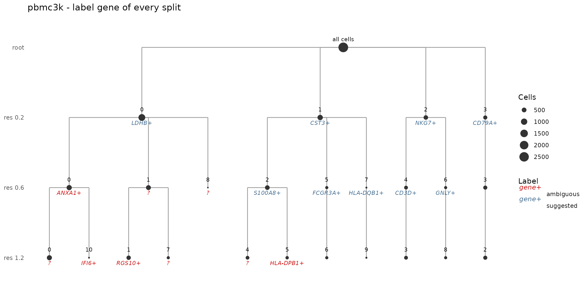
The heatmap shows every tracked gene at every cluster, coloured by its AUC against all other cells. A lineage marker appears as a block that switches on at a branch and stays on below it.
tm$plots$heatmap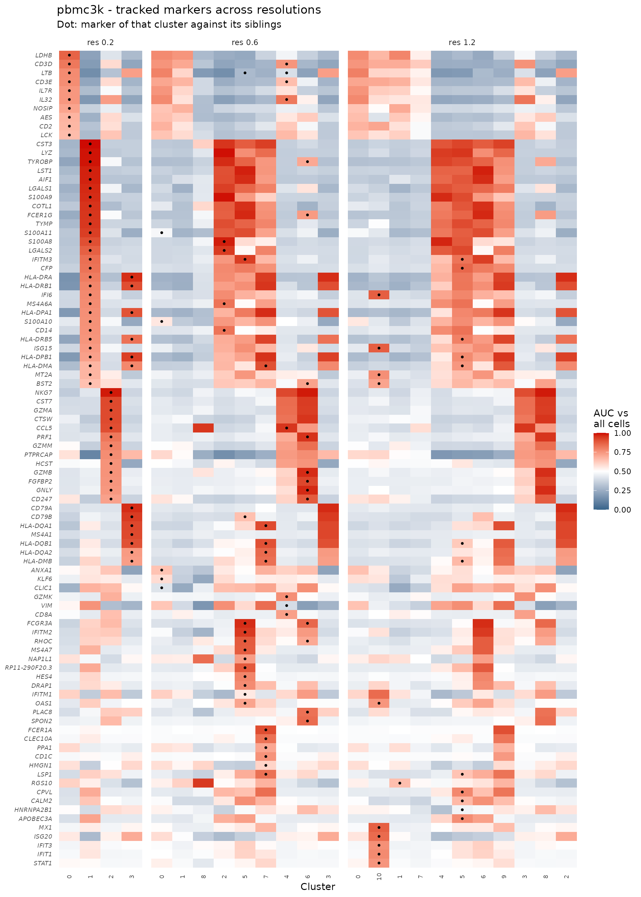
2. Comparing marker tables across conditions
When markers are computed separately for each condition, batch or
integration method, the question becomes how the marker profiles differ
between those runs. Two functions take such a combined table. It needs
the columns gene, cluster,
avg_log2FC, diff (=
pct.1 - pct.2) and an identifier column.
Here we compute cluster markers separately for each of the six severity-by-batch groups of the simulated cohort.
pbmc$group <- paste(pbmc$severity, pbmc$batch, sep = "_")
marker_tbl <- bind_rows(lapply(sort(unique(pbmc$group)), function(g) {
sub <- subset(pbmc, subset = group == g)
Idents(sub) <- "seurat_clusters"
FindAllMarkers(sub, only.pos = TRUE, logfc.threshold = 0.25, min.pct = 0.1, verbose = FALSE) %>%
mutate(diff = pct.1 - pct.2, group = g)
}))
marker_tbl %>% dplyr::count(group)
#> group n
#> 1 Healthy_Batch_1 3953
#> 2 Healthy_Batch_2 3178
#> 3 Mild_Batch_1 4264
#> 4 Mild_Batch_2 3723
#> 5 Severe_Batch_1 4589
#> 6 Severe_Batch_2 4170
plot_gene_markers_with_dendro()
Averages the marker statistics per gene and group, clusters the
groups (Ward.D2) and draws a dot plot. Dot size shows log2FC and colour
shows the difference in detection rate. The clusters in which each gene
was a marker are written above the dots, and the dendrogram is attached
beside the plot. genes accepts a vector or a single regular
expression.
gm <- plot_gene_markers_with_dendro(
df = marker_tbl,
genes = c("CD14", "LYZ", "S100A8", "S100A9", "FCGR3A", "MS4A7",
"GNLY", "NKG7", "MS4A1", "CD79A", "IL7R", "CCR7", "PPBP"),
id_col = "group",
plot_title = "Canonical markers across cohort groups",
output_dir = file.path(out_dir, "marker_dendro")
)
gm$combined
plot_split_dotplots_by_gene_cluster()
For gene families with many members, this function plots every
gene x cluster combination. It splits the x-axis into
n_splits dot plots and saves a global dendrogram of the
groups. Here we use a regular expression to select all HLA class II
genes.
plot_split_dotplots_by_gene_cluster(
df = marker_tbl,
gene_regex = "^HLA-D",
id_col = "group",
n_splits = 2,
plot_title_prefix = "HLA class II markers",
output_dir = file.path(out_dir, "split_dot")
)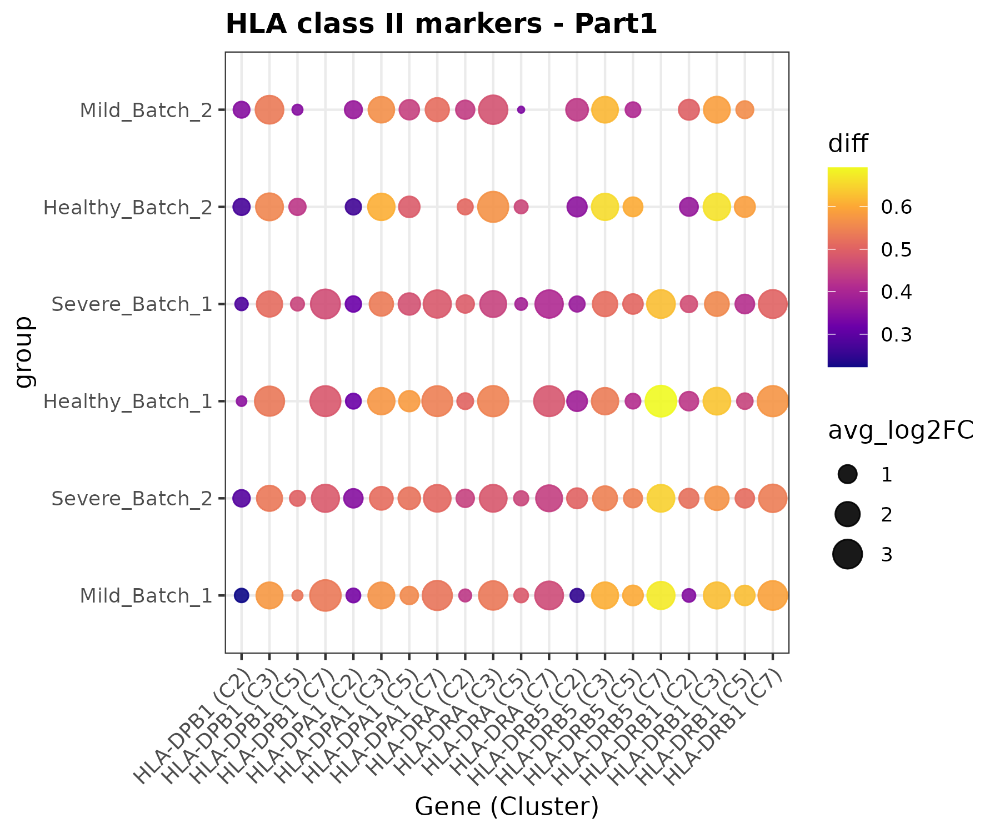
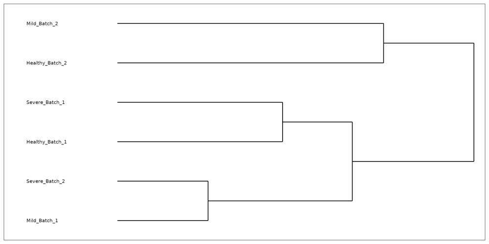
3. Pathway enrichment
Both enrichment pipelines take a marker table with one block of genes
per cluster and a two-column TERM2GENE
table, here the MSigDB Hallmark collection. If the table also has a
column whose name contains cell_type, results are
additionally summarised per cell type. We therefore compute markers for
the nine seurat_clusters (two of which are CD4 T) and
attach their cell type.
hallmark <- load_hallmark_sets() # MSigDB Hallmark gene sets; NULL if they cannot be downloaded
have_sets <- !is.null(hallmark)
Idents(pbmc) <- "seurat_clusters"
mk_clusters <- FindTopMarkersAndHeatmap(
seurat_obj = pbmc,
sample_name = "pbmc3k_clusters",
onlyPos = FALSE, # GSEA needs both tails of the ranking
output_dir_base = file.path(out_dir, "markers"),
dpi = 72
)
enrich_df <- mk_clusters$markers %>%
mutate(cluster = as.character(cluster),
cell_type = as.character(pbmc$cell_type[match(cluster, pbmc$seurat_clusters)]))
dim(enrich_df)
#> [1] 19618 8
dplyr::as_tibble(dplyr::distinct(enrich_df, cluster, cell_type))
#> # A tibble: 9 × 2
#> cluster cell_type
#> <chr> <chr>
#> 1 0 CD4 T
#> 2 1 CD4 T
#> 3 2 CD14 Mono
#> 4 3 B
#> 5 4 CD8 T
#> 6 5 FCGR3A Mono
#> 7 6 NK
#> 8 7 DC
#> 9 8 PlateletGene Set Enrichment Analysis: run_global_gsea()
For every cluster, genes are ranked by avg_log2FC and
tested with clusterProfiler::GSEA(). A first pass collects
the NES range of all clusters, so every per-cluster dot plot shares the
same x-axis and can be compared directly. The function saves per-cluster
NES dot plots, a classic enrichment plot for the top pathway of each
cluster, alphabetical and hierarchically clustered overview dot plots,
signed-significance plots (global and per cell type), and CSV
summaries.
gsea_dir <- file.path(out_dir, "gsea")
gsea_res <- run_global_gsea(
GSEA_df = enrich_df,
m_t2g = hallmark,
output_dir = gsea_dir,
title_prefix = "Hallmark",
top_n_per_direction = 8,
top_n_overall = 4
)
gsea_res %>%
group_by(cluster) %>%
slice_min(p.adjust, n = 2, with_ties = FALSE) %>%
dplyr::select(cluster, cell_type, Description, NES, p.adjust) %>%
arrange(as.numeric(cluster))
#> # A tibble: 15 × 5
#> # Groups: cluster [8]
#> cluster cell_type Description NES p.adjust
#> <chr> <chr> <chr> <dbl> <dbl>
#> 1 1 CD4 T HALLMARK_KRAS_SIGNALING_UP -1.88 0.000473
#> 2 1 CD4 T HALLMARK_ALLOGRAFT_REJECTION -1.69 0.000877
#> 3 2 CD14 Mono HALLMARK_ALLOGRAFT_REJECTION -2.01 0.000413
#> 4 2 CD14 Mono HALLMARK_MYC_TARGETS_V1 -1.97 0.00137
#> 5 3 B HALLMARK_COMPLEMENT -1.94 0.00388
#> 6 3 B HALLMARK_INFLAMMATORY_RESPONSE -1.93 0.00388
#> 7 4 CD8 T HALLMARK_KRAS_SIGNALING_UP -2.08 0.00196
#> 8 4 CD8 T HALLMARK_XENOBIOTIC_METABOLISM -1.79 0.0482
#> 9 5 FCGR3A Mono HALLMARK_ALLOGRAFT_REJECTION -2.48 0.0000000191
#> 10 5 FCGR3A Mono HALLMARK_XENOBIOTIC_METABOLISM 1.74 0.0121
#> 11 6 NK HALLMARK_TNFA_SIGNALING_VIA_NFKB -2.37 0.000136
#> 12 6 NK HALLMARK_G2M_CHECKPOINT 2.19 0.000136
#> 13 7 DC HALLMARK_DNA_REPAIR -1.83 0.0408
#> 14 8 Platelet HALLMARK_COAGULATION 2.14 0.000489
#> 15 8 Platelet HALLMARK_MYC_TARGETS_V1 -2.36 0.00146The clustered overview groups clusters with similar pathway activity. The two CD4 T clusters (0 and 1) are neighbours, while CD14 monocytes (cluster 2) and platelets (cluster 8) stand apart. Cluster 2 has activated inflammatory and TNF-alpha signalling, and cluster 8 has activated coagulation. Clusters without significant pathways, here the small DC cluster 7, are left out.
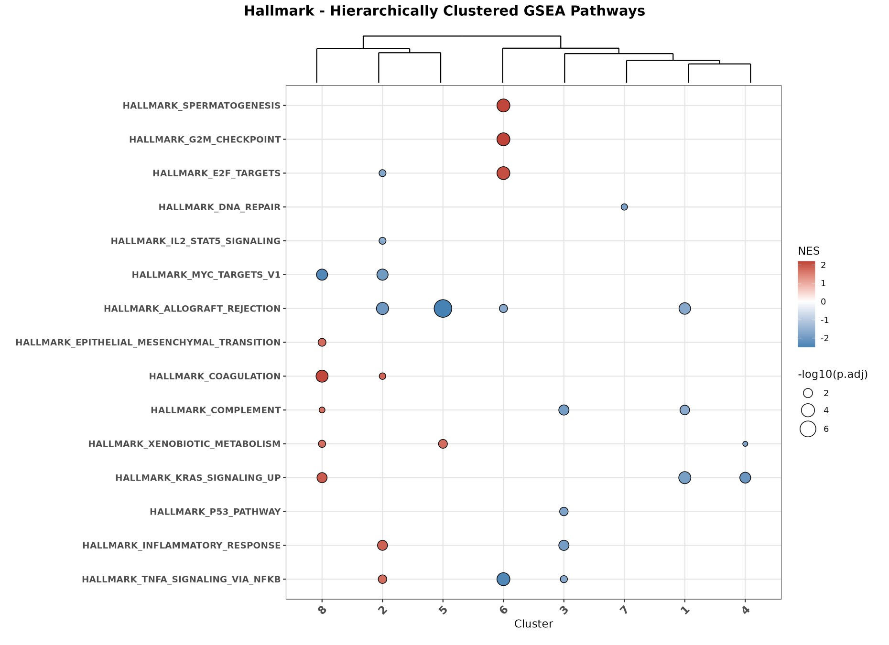
The signed-significance view puts direction and significance on one axis:
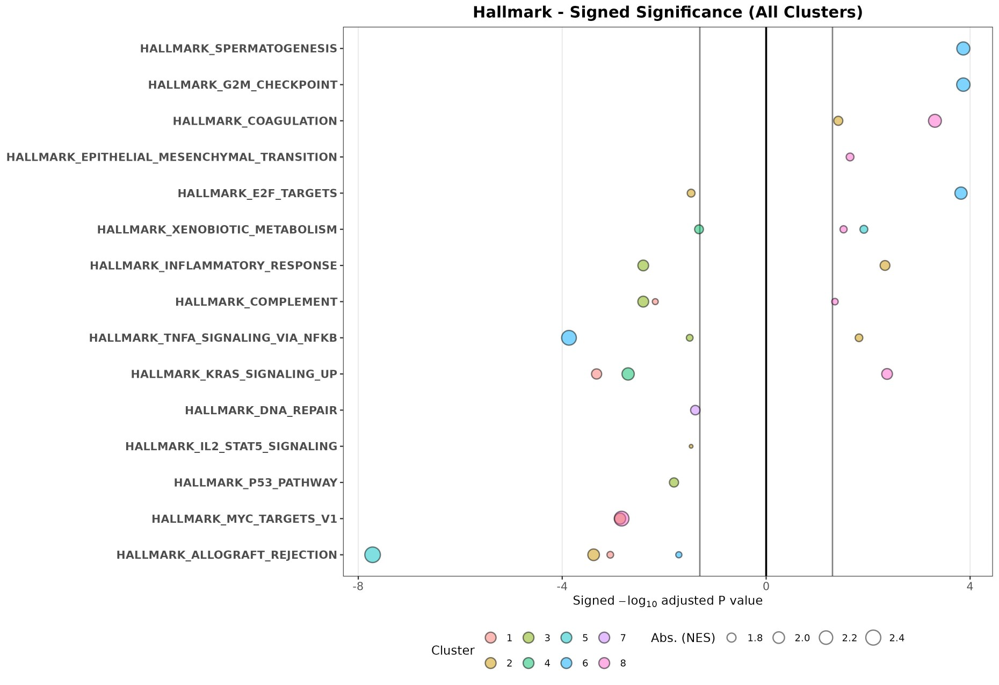
Per-cluster outputs for cluster 2 (CD14 monocytes): the NES dot plot and the running enrichment score of its top pathway.
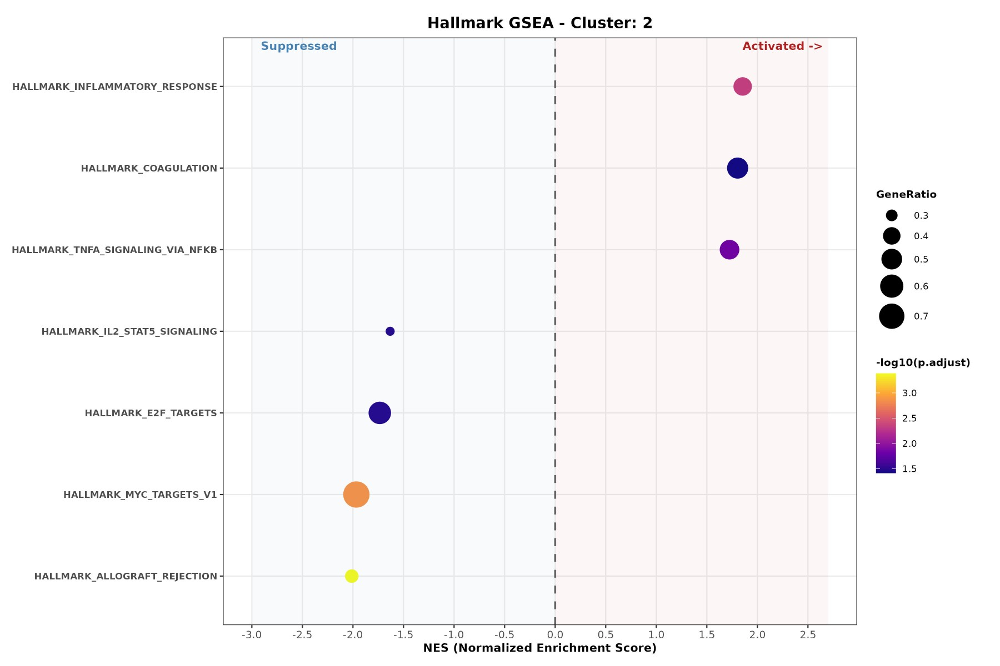
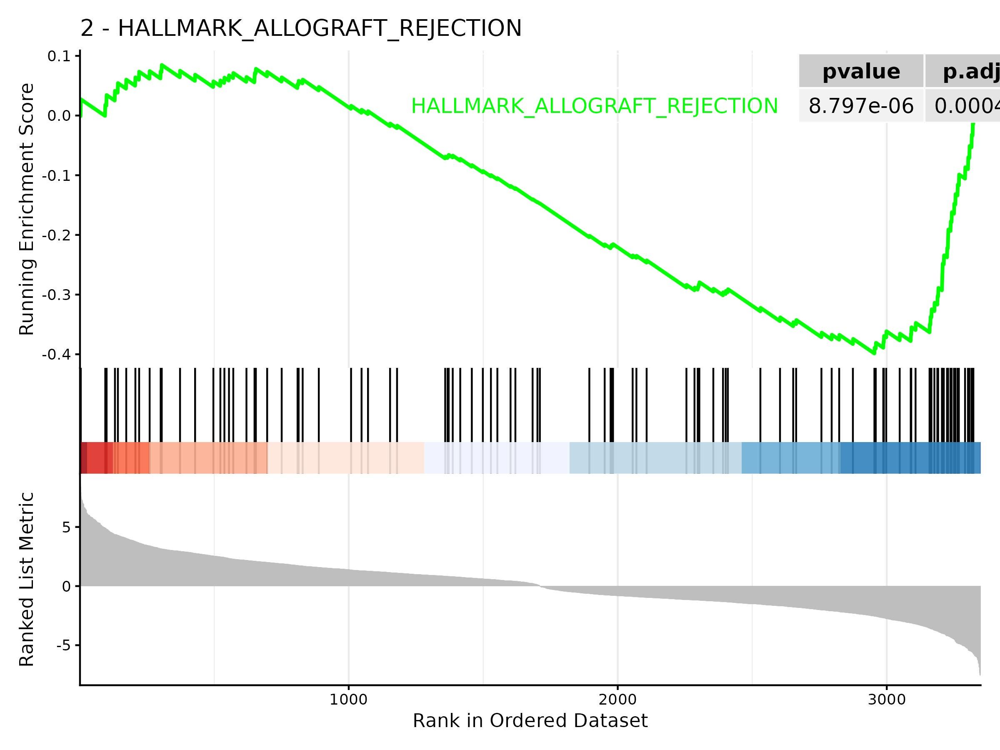
Over-Representation Analysis: run_global_ora()
ORA splits each cluster’s genes into Activated
(avg_log2FC > log2fc_cutoff) and
Suppressed
(avg_log2FC < -log2fc_cutoff) sets at
p_val_adj < padj_cutoff, and tests each set with
clusterProfiler::enricher() against the universe of all
tested genes. With variable_per_clus = TRUE, the function
also draws a signed-significance plot for every cell type.
ora_dir <- file.path(out_dir, "ora")
ora_res <- run_global_ora(
ORA_df = enrich_df,
m_t2g = hallmark,
output_dir = ora_dir,
title_prefix = "Hallmark",
top_n_global = 20,
top_n_per_cluster = 8,
log2fc_cutoff = 0.25,
padj_cutoff = 0.05,
global_width = 11,
global_height = 8,
variable_per_clus = TRUE
)
ora_res %>%
dplyr::count(cluster, cell_type, Direction) %>%
arrange(as.numeric(cluster))
#> cluster cell_type Direction n
#> 1 0 CD4 T Activated 5
#> 2 0 CD4 T Suppressed 3
#> 3 1 CD4 T Activated 1
#> 4 1 CD4 T Suppressed 4
#> 5 2 CD14 Mono Activated 7
#> 6 2 CD14 Mono Suppressed 2
#> 7 3 B Activated 2
#> 8 3 B Suppressed 8
#> 9 4 CD8 T Activated 2
#> 10 4 CD8 T Suppressed 6
#> 11 5 FCGR3A Mono Activated 3
#> 12 5 FCGR3A Mono Suppressed 2
#> 13 6 NK Activated 1
#> 14 6 NK Suppressed 2
#> 15 7 DC Suppressed 1
#> 16 8 Platelet Activated 4
#> 17 8 Platelet Suppressed 1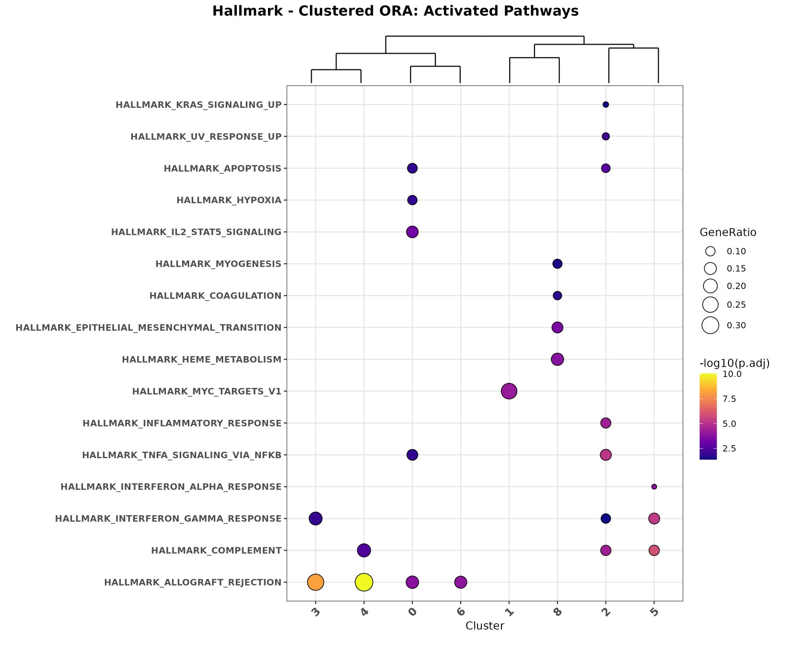
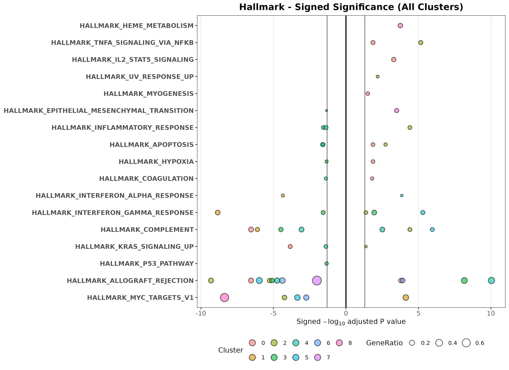
Per-cluster ORA outputs (cluster 2, CD14 monocytes):
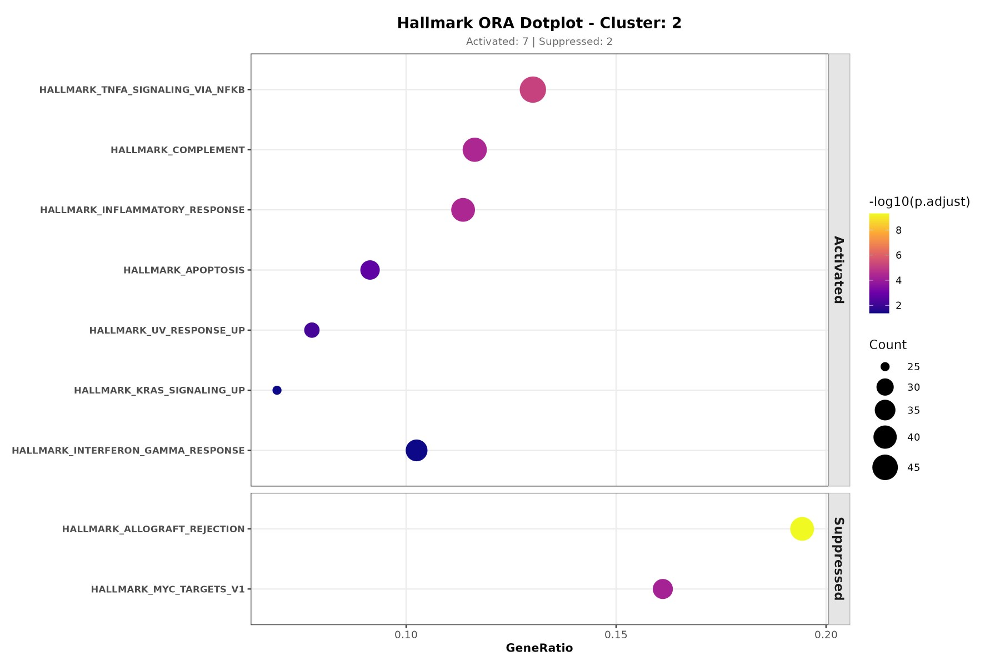
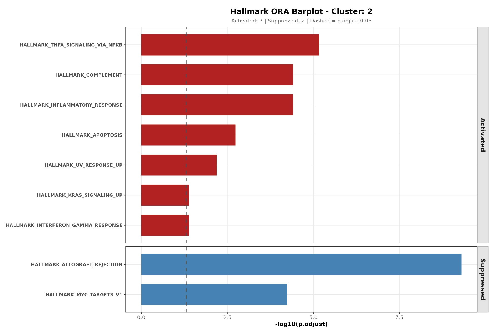
4. Pseudo-bulk differential expression with DESeq2
Cluster markers compare cells. A pseudo-bulk analysis compares
samples: the counts of each donor x population are
summed and analysed with DESeq2, which correctly models donor-to-donor
variability. Here we compare FCGR3A+ with CD14+ monocytes within the
same donors, using a paired design (~ donor + subset).
mono <- subset(pbmc, subset = cell_type %in% c("CD14 Mono", "FCGR3A Mono"))
mono$subset <- ifelse(mono$cell_type == "CD14 Mono", "CD14", "FCGR3A")
pb <- AggregateExpression(mono, assays = "RNA", group.by = c("donor_id", "subset"),
return.seurat = FALSE)$RNA
coldata <- data.frame(
row.names = colnames(pb),
donor = sub("_.*$", "", colnames(pb)),
subset = factor(sub("^.*_", "", colnames(pb)), levels = c("CD14", "FCGR3A"))
)
coldata$severity <- pbmc$severity[match(coldata$donor, pbmc$donor_id)]
dds <- DESeqDataSetFromMatrix(round(pb), colData = coldata, design = ~ donor + subset)
dds <- dds[rowSums(counts(dds) >= 10) >= 3, ]
dds <- DESeq(dds, quiet = TRUE)
res_df <- as.data.frame(results(dds, contrast = c("subset", "FCGR3A", "CD14")))
head(res_df[order(res_df$padj), c("baseMean", "log2FoldChange", "padj")])
#> baseMean log2FoldChange padj
#> LYZ 710.62555 -2.711858 3.888894e-293
#> S100A9 459.50829 -3.408762 1.039931e-238
#> S100A8 236.02676 -4.137252 4.311980e-94
#> IFITM2 127.90055 2.087865 4.086997e-67
#> RPS19 420.64363 1.041063 7.382850e-61
#> FCGR3A 72.51636 4.780340 3.927394e-55Volcano trio: generate_volcano_trio()
The function expects a data frame with gene symbols as row names and
the DESeq2 columns log2FoldChange and padj.
Seurat results can be used after renaming avg_log2FC and
p_val_adj. It returns three volcano plots (made with
EnhancedVolcano) that label, in turn, the top 10 up- and down-regulated
genes, the significant genes from your own target_genes
list, and both together. Genes are labelled only if they pass
padj < 0.05 and |log2FC| >= 1.
volcano <- generate_volcano_trio(
res = res_df,
main_title = "FCGR3A+ vs CD14+ monocytes (pseudo-bulk, paired by donor)",
target_genes = c("FCGR3A", "MS4A7", "CDKN1C", "LST1", "CSF1R",
"CD14", "LYZ", "S100A8", "VCAN", "CCR2")
)
volcano
Heatmap of the top genes: get_top_mixed_genes() and
generate_and_save_heatmap()
get_top_mixed_genes() returns the union of the
n_padj most significant genes and the n_lfc
genes with the largest effect, chosen among the strictly significant
ones. This way neither highly significant small changes nor large
effects in lowly expressed genes are missed.
top_genes <- get_top_mixed_genes(res_df, n_padj = 25, n_lfc = 25)
length(top_genes)
#> [1] 39
head(top_genes, 15)
#> [1] "LYZ" "S100A9" "S100A8" "IFITM2" "RPS19" "FCGR3A" "LGALS2" "LST1"
#> [9] "FCER1G" "RHOC" "MS4A7" "GPX1" "GSTP1" "MS4A6A" "CCL3"generate_and_save_heatmap() uses these genes to draw two
row-scaled heatmaps of the variance-stabilised counts. The left heatmap
keeps your sample order (ordered_samps) and the right one
clusters the samples freely.
vsd <- vst(dds, blind = FALSE)
anno_col <- as.data.frame(colData(vsd)[, c("subset", "severity")])
ordered_samples <- rownames(anno_col)[order(anno_col$subset, anno_col$severity)]
heatmap_dir <- file.path(out_dir, "deseq2")
generate_and_save_heatmap(
res_obj = res_df,
comp_name = "FCGR3A_vs_CD14",
comp_title = "FCGR3A+ vs CD14+ monocytes",
vsd_data = vsd,
anno_col = anno_col,
ordered_samps = ordered_samples,
n_padj = 25,
n_lfc = 25,
out_dir = heatmap_dir,
ts = format(Sys.time(), "%Y%m%d_%H%M%S"),
clus = "Monocytes"
)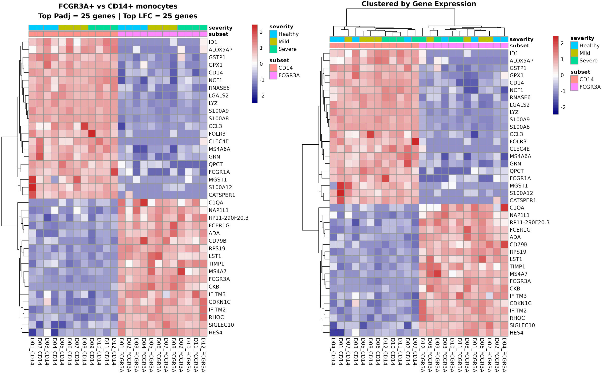
In the unordered (right) heatmap the samples split by monocyte subset, not by the simulated severity. This is expected, because severity was simulated and has no transcriptional effect.
Session information
sessionInfo()
#> R version 4.6.2 (2026-10-29)
#> Platform: x86_64-pc-linux-gnu
#> Running under: Ubuntu 22.04.5 LTS
#>
#> Matrix products: default
#> BLAS: /usr/lib/x86_64-linux-gnu/openblas-pthread/libblas.so.3
#> LAPACK: /usr/lib/x86_64-linux-gnu/openblas-pthread/libopenblasp-r0.3.20.so; LAPACK version 3.10.0
#>
#> locale:
#> [1] LC_CTYPE=C.UTF-8 LC_NUMERIC=C LC_TIME=C.UTF-8
#> [4] LC_COLLATE=C.UTF-8 LC_MONETARY=C.UTF-8 LC_MESSAGES=C.UTF-8
#> [7] LC_PAPER=C.UTF-8 LC_NAME=C LC_ADDRESS=C
#> [10] LC_TELEPHONE=C LC_MEASUREMENT=C.UTF-8 LC_IDENTIFICATION=C
#>
#> time zone: UTC
#> tzcode source: system (glibc)
#>
#> attached base packages:
#> [1] stats4 stats graphics grDevices utils datasets methods
#> [8] base
#>
#> other attached packages:
#> [1] future_1.82.0 DESeq2_1.52.0
#> [3] SummarizedExperiment_1.42.0 Biobase_2.72.0
#> [5] MatrixGenerics_1.24.0 matrixStats_1.5.0
#> [7] GenomicRanges_1.64.0 Seqinfo_1.2.0
#> [9] IRanges_2.46.0 S4Vectors_0.50.3
#> [11] BiocGenerics_0.58.1 generics_0.1.4
#> [13] msigdbr_26.1.1 ggplot2_4.0.3
#> [15] dplyr_1.2.1 OHMmy_1.0.2.9000
#> [17] Seurat_6.0.0 SeuratObject_5.4.0
#> [19] sp_2.2-4
#>
#> loaded via a namespace (and not attached):
#> [1] RcppAnnoy_0.0.23 splines_4.6.2 ggplotify_0.1.4
#> [4] tibble_3.3.1 polyclip_1.10-7 enrichit_0.2.7
#> [7] rpart_4.1.27 fastDummies_1.7.6 lifecycle_1.0.5
#> [10] httr2_1.3.0 rstatix_1.1.0 globals_0.20.0
#> [13] processx_3.9.0 lattice_0.23-1 MASS_7.3-66
#> [16] backports_1.5.1 magrittr_2.0.5 sass_0.4.10
#> [19] rmarkdown_2.32 jquerylib_0.1.4 yaml_2.3.12
#> [22] ggtangle_0.1.5 otel_0.3.0 sctransform_0.4.3
#> [25] spam_2.11-4 EnhancedVolcano_1.30.0 cowplot_1.2.0
#> [28] pbapply_1.7-5 DBI_1.3.0 RColorBrewer_1.1-3
#> [31] abind_1.4-8 Rtsne_0.17 purrr_1.2.2
#> [34] ggraph_2.2.2 yulab.utils_0.2.5 tweenr_2.0.3
#> [37] rappdirs_0.3.4 aisdk_1.4.12 gdtools_0.5.3
#> [40] enrichplot_1.32.1 ggrepel_0.9.8 irlba_2.4.1
#> [43] listenv_1.1.0 tidytree_0.4.8 pheatmap_1.0.13
#> [46] RSpectra_0.16-2 parallelly_1.50.0 pkgdown_2.2.1
#> [49] codetools_0.2-20 DelayedArray_0.38.2 DOSE_4.6.0
#> [52] ggforce_0.5.0 tidyselect_1.2.1 aplot_0.3.2
#> [55] farver_2.1.2 SoupX_1.6.2 viridis_0.6.5
#> [58] jsonlite_2.0.0 tidygraph_1.3.1 progressr_1.1.0
#> [61] Formula_1.2-6 ggridges_0.5.7 systemfonts_1.3.2
#> [64] ggnewscale_0.5.2 tools_4.6.2 treeio_1.36.1
#> [67] ragg_1.5.2 ica_1.0-3 Rcpp_1.1.2
#> [70] glue_1.8.1 gridExtra_2.3.1 SparseArray_1.12.3
#> [73] xfun_0.62 qvalue_2.44.0 withr_3.0.3
#> [76] fastmap_1.2.0 callr_3.8.0 digest_0.6.39
#> [79] gridGraphics_0.5-1 R6_2.6.1 textshaping_1.0.5
#> [82] scattermore_1.2 GO.db_3.23.1 jpeg_0.1-11
#> [85] RSQLite_3.53.3 utf8_1.2.6 tidyr_1.3.2
#> [88] fontLiberation_0.1.0 pls_2.9-0 graphlayouts_1.2.5
#> [91] httr_1.4.9 htmlwidgets_1.6.4 S4Arrays_1.12.1
#> [94] scatterpie_0.2.6 uwot_0.2.5 pkgconfig_2.0.3
#> [97] gtable_0.3.6 blob_1.3.0 S7_0.2.2
#> [100] XVector_0.52.0 clusterProfiler_4.20.3 htmltools_0.5.9
#> [103] fontBitstreamVera_0.1.1 carData_3.0-6 dotCall64_1.2
#> [106] scales_1.4.0 png_0.1-9 ggfun_0.2.2
#> [109] ggdendro_0.2.0 knitr_1.52 reshape2_1.4.5
#> [112] nlme_3.1-171 cachem_1.1.0 stringr_1.6.0
#> [115] KernSmooth_2.23-27 parallel_4.6.2 AnnotationDbi_1.74.0
#> [118] desc_1.4.3 pillar_1.11.1 grid_4.6.2
#> [121] vctrs_0.7.3 RANN_2.6.3 ggpubr_1.0.0
#> [124] tidydr_0.0.7 car_3.1-5 cluster_2.1.8.3
#> [127] evaluate_1.0.5 cli_3.6.6 locfit_1.5-9.12
#> [130] compiler_4.6.2 rlang_1.3.0 crayon_1.5.3
#> [133] leidenbase_0.1.37 future.apply_1.21.0 ggsignif_0.6.4
#> [136] labeling_0.4.3 ps_1.9.3 plyr_1.8.9
#> [139] fs_2.1.0 ggiraph_0.9.6 stringi_1.8.9
#> [142] viridisLite_0.4.3 BiocParallel_1.46.0 assertthat_0.2.1
#> [145] Biostrings_2.80.2 lazyeval_0.2.3 fontquiver_0.2.1
#> [148] GOSemSim_2.38.3 Matrix_1.7-6 RcppHNSW_0.7.0
#> [151] patchwork_1.3.2 bit64_4.8.6 KEGGREST_1.52.2
#> [154] igraph_2.3.4 broom_1.0.13 memoise_2.0.1
#> [157] bslib_0.12.0 ggtree_4.2.1 bit_4.6.0
#> [160] gson_0.2.2 ape_5.8-1